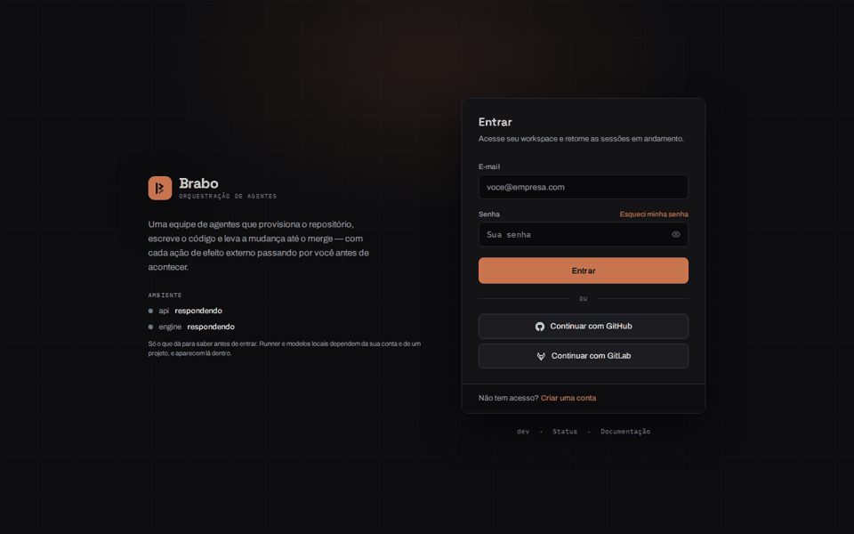
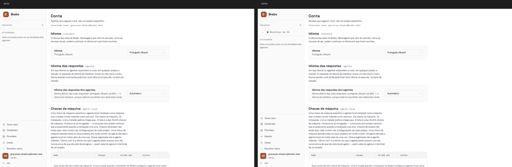
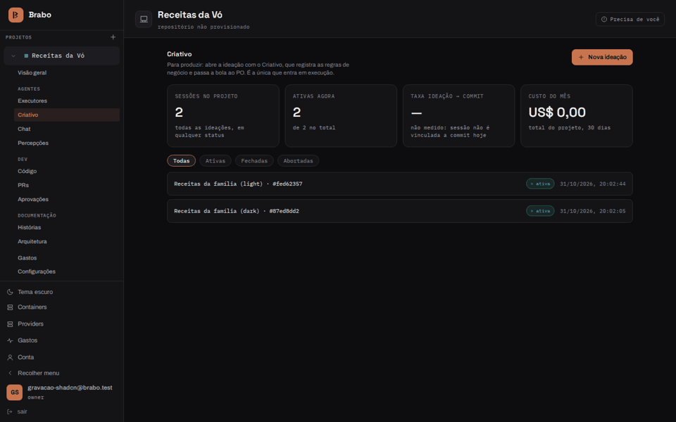
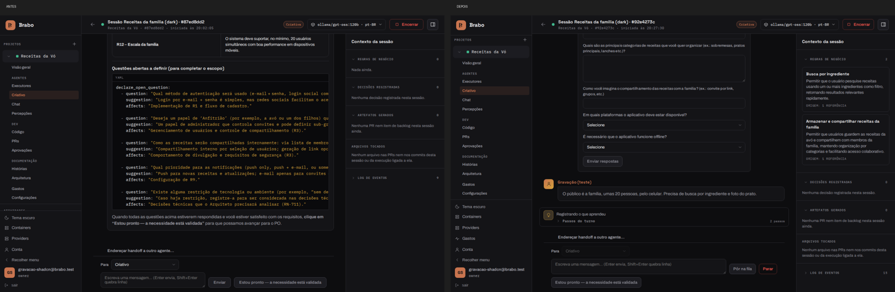
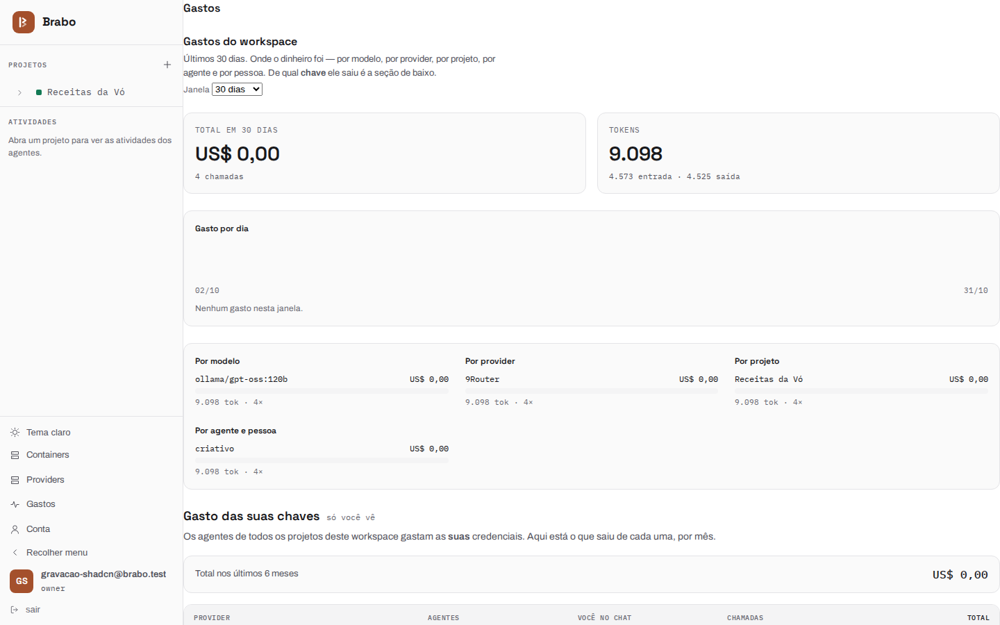

Interface before and after shadcn (10/31/2026)
Visual record of the round that switched the front end's base to shadcn/ui with Base UI
(ADR 0232) and that, on the same day,
made 9Router receive the agents' tools
(RN-950). The before is the installation with the 10/31
morning dev; the after is dev 5851354c7c, with the house primitives
(Button, Badge, Card, Alert, Table, Input, Select, Modal,
Disclosure, tabs) already served by shadcn's components.
How it was recorded: headless browser (Playwright) against the local installation,
on a fresh test account, 1440×900 screens in both themes. The chat uses 9Router
with a free model (ollama/gpt-oss:120b), at no cost.
The walk through the screens
Login, home, Containers, Providers, Account and Status, first in the dark theme and then in the light one. The goal of the migration was no screen changes; what changes between the two is data (the test project created between the recordings) and the new Spend page.
| Before | After |
|---|---|
 |
 |


A Creative session
The same conversation on both installations: the Creative opens the session, receives the idea ("an app to keep my grandmother's recipes") and then the audience and the requirements.
- Before: 9Router did not receive the tools, and the model wrote them out as
text (the
declare_open_questionblock in YAML on the thread). No business rule was recorded: the side panel stays at zero. - After: the Creative calls the tools for real. The question becomes a structured form and the panel shows the recorded business rules.
| Before | After |
|---|---|
 |
 |

New Spend page
The global /spend page (RN-952) did not exist
in the before. In the after recording it appears without the page margin — the content
touches the sidebar; the defect was logged for fixing.
